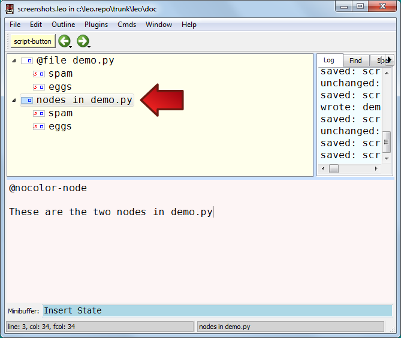

Views: 2¶
In Leo, a view is simply a subset of the nodes of the outline. We represent a view as ordinary node, called a view node (1). The children of the view node are the subset of nodes that define the view. It’s that simple.
With Leo, you can have as many view nodes as you like. There is no such thing as a single, “correct” view of data.
